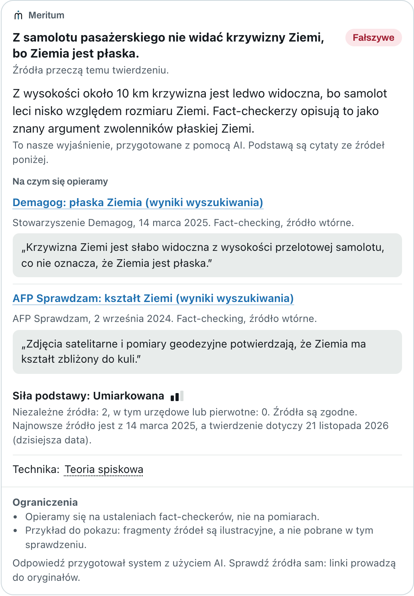

Sprawdź, zanim podasz dalej. Każde ustalenie ma źródło.
Wklejasz tekst albo link, a Meritum sprawdza każde twierdzenie w opisanych źródłach, cytuje dosłowny fragment i mówi wprost, gdy dowodów brakuje.

Wklejasz tekst albo link, a Meritum sprawdza każde twierdzenie w opisanych źródłach, cytuje dosłowny fragment i mówi wprost, gdy dowodów brakuje.
